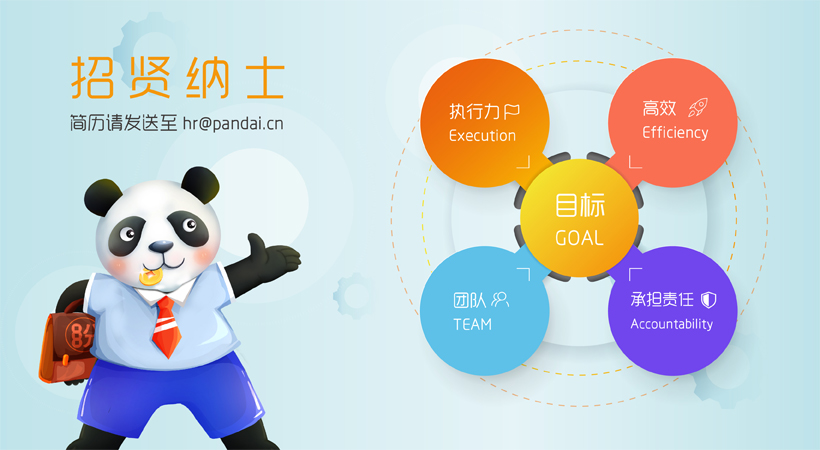

如果您对以下职位感兴趣，请联系: hr@pandai.cn
“当海盗比加入海军更有意思。”——史蒂夫·乔布斯
工作职责：
1、组织研究集团业务内，覆盖行业最新产品的技术发展方向，有效与业务结合制定技术发展战略规划并监督保障计划落实与效果；
2、负责集团信息技术中心及P2P网贷平台的技术设计、产品研发，运维与团队管理工作；
3、参与制定公司软件产品的发展方向，确定公司产品框架及开发实施计划，架构高效、科学的产品架构和技术架构；
4、根据集团战略，寻找互联网金融业务创新点；制定互联网金融产品需求计划，管理公司的整体核心技术，组织制定和实施重大技术决策和技术方案；
5、制定中心相关规划、相关规范，完善、细化研发中心管理体 系和流程，并监督执行，保持公司技术的行业领先性和核心竞争力；
6、完成各项技术工作相关数据统计分析报告，并据此对公司发展提出合理化建议；
7、规划产品研发进度安排，根据公司需要确定产品开发周期及人员安排；
8、全面监控产品开发质量、进度和成本控制。
任职要求：
1、国家统招重点院校本科或以上学历，计算机、软件工程相关专业；
2、8年以上知名互联网/移动互联/电子商务行业产品设计、项目开发及团队管理经验，3年以上知名互联网金融企业同等职位背景；
3、对互联网金融、消费金融等产品的发展趋势、竞争态势、市场需求等具有较强的分析能力和敏锐的反应能力；
4、强烈的创新意识，高度的创造力、拓展力、能承受较大工作压力；
5、有PC、移动端领导团队开发整个平台及产品完事的管理经验优先。
工作职责：
1、用行业的最优方案设计、构架和开发在线消费信贷系统；
2、配合公司的产品开发团队和其他部门的工作。
任职要求：
1、2年以上Web系统开发经验；
2、实际生产环境下的Ruby on Rails开发经验；
3、熟悉常用数据库，熟练掌握SQL语句；
4、熟练利用Ajax进行用户交互设计；
5、熟悉git及Rails系统部署；
6、熟练利用Rspec进行测试驱动开发；
7、良好的沟通能力；
8、自我激励与自我管理；
9、能够适应快速的工作节奏和环境；
10、对Web新技术充满热情；
11、具有团队管理经验者优先；
12、能用英语交流者优先。
工作职责：
1、负责网站前端应用进行开发，支持视觉设计以及Web开发的相关工作；
2、本着以用户为核心的设计理念，对页面进行优化，使用户操作更趋于人性化；
3、支持部门产品维护和新产品的开发，负责产品前端优化。
任职要求：
1、2年及以上 Web 前端开发经验；
2、熟悉编程基础知识；
3、精通 HTML、CSS、JavaScript 等 Web 前端技术，熟悉 W3C 网页标准，了解Web 开发语言（PHP、Python 或 Ruby）者优先；
4、理解 AJAX 运作机制，了解常见 JS 开发框架（如prototype、jQuery等）；
5、熟悉html5标准，能够进行移动web页面开发,有微信页面开发经验优先；
6、熟悉bootstrap、pure等css框架。熟悉AngularJS 或 Ember.js等前端框架者优先。
工作职责：
1、独立负责完成过Web网站UI设计、APP界面设计、平面设计等相关设计工作；
2、有2年以上互联网设计工作经验，了解Web、手机端设计流程及设计规范，有较强的用户界面设计功底及设计创意；
3、有扎实的美术功底和良好的创意构思能力，对色彩有深刻的把握能力、独特的设计风格、独到的创意试点与创新意识；
4、精通 Photoshop、Illustrator、sketch等设计软件，有一定的手绘能力，能独立完成产品或界面的UI/UE设计；
5、掌握前端开发技术，能够熟练使用DIV+CSS页面布局制作静态页面，有响应式web开发经验者优先；
6、良好的学习能力和沟通能力，工作积极主动，具有强烈的责任心和团队合作精神，关注细节，追求完美；
任职要求：
1、根据需求，对产品整体美术风格、交互设计、界面结构、操作流程等进行设计；
2、负责项目中各种交互界面、图标、LOGO、按钮等相关元素的设计与制作；
3、能积极与开发沟通，推进人机界面及交互设计的最佳实现；
3、负责软件界面的美术设计、创意工作和制作工作；
5、根据各种相关软件的用户群，提出构思新颖、有高度吸引力的创意设计；
6、对页面进行优化，使用户体验更趋于人性化，维护产品运营。
工作职责：
1、具有系统软件测试经验，熟悉软件测试流程及规范，熟练掌握LoadRunner，WinRunner等常用测试工具的配置及使用，熟悉Bug追踪系统如 TestDirector, QC等；
2、编写测试方案，制定测试计划；编写测试文档和测试用例；
3、完成应用软件的功能与性能测试；
4、组织完成测试和集成测试工作；编制软件测试报告并评估软件质量；
5、跟踪分析测试情况，解决测试过程遇到的问题；
6、具有相应文档的编写能力，熟练使用日常办公软件office 工具等。
7、具有大型互联网，物流方面测试工作经验者优先考虑。
任职要求：
1、计算机或相关专业本科以上学历；
2、有较强的学习能力和主动性，能胜任高强度的工作；
2、熟悉相关开发语言，操作系统及数据库系统。具备软件测试平台搭建的能力，熟练编写测试脚本和使用测试工具；
4、了解软件工程学思想和方法，了解基本数据库系统及网络知识；
5、较强的发现问题，分析问题的能力；较强的语言表达能力和文档撰写能力，良好的英文阅读能力；
6、工作责任心强，细致，耐心。
工作职责：
1、根据产品需求开发相关Android客户端；
2、修正测试中发现的bug；
3、对客户端进行优化、重构；
4、对产品提出改进建议。
任职要求：
1、2年以上Android开发经验；
2、有扎实的Java语言基础；
3、可独立完成APP的开发；
4、熟悉Android开发技术，包括UI、网络等方面，熟悉Android 开发工具和相关开发测试工具的使用 ；
5、有丰富的Android应用架构经验，深入了解Java设计模式、Android系统框架和SDK等；
6、熟悉Android 性能调优方法，熟悉设计模式和面向对象的程序设计思想；
7、对APP安全方面有经验者优先。
工作职责：
1. 参与产品设计讨论；
2. 根据产品设计文档，进行IOS软件设计；
3. 对现有代码进行重构、优化；
4. 软件开发、编码、测试；
5. 编写相关技术文档。
任职要求：
1. 有过两年及以上IOS端开发经验；
2. 熟练掌握IOS SDK,各层次Frameworks；
2．能独立开发IOS APP；
4. 深刻理解、使用MVC模式；
5. 熟练掌握Objective C，有swift经验者优先；
6. 良好的团队协作能力。
工作职责：
1、负责公司风险控制战略的执行、全面管理公司风控工作；
2、组织开展对我司风险状况分析；
3、实行投资前审查，根据审批结果组织款项发放，进行款项全程风险监控；
3、组织投后管理及事后的风险评估；
5、定期提供内控与风险管理的风险分析报告；
6、对公司的决策和主要业务活动进行风险评估和控制；
7、监督各业务部门对风控制度及流程的执行情况。
任职要求：
1、本科及以上学历，金融、法律或财务相关专业；
2、8年以上风控工作经验，其中5年以上管理经验，有银行信贷或机构金融风险管理相关工作经验；
3、熟悉信审流程和审查标准，并对资料判断、逻辑判断、审查等技巧和方式有丰富经验；
4、熟悉公司风险及法务管理相关工作，具备一定的风险管理、企业内部控制经验，具有较强的分析能力、文字表达能力、沟通协调能力以及组织能力；
5、认同公司的发展战略，具有强烈的责任感和事业心，具有高度的敬业精神。
工作职责：
1、全面负责公司信贷项目的风险审查和管理工作；
2、建立和完善公司风险评估、风险控制体系，制定并具体落实公司风险管理办法；
3、负责定期对业务部门工作合规性的检查与管理，并监控各类业务风险的分析及防范措施的制定，并建立企业风险数据库和跟踪档案；
4、负责组织、参与项目评审，根据具体情况提出风险防范建议；
5、负责团队日常管理工作，带领团队完成公司下达风控任务指标；
6、为各部门日常相关事务及时提供风险审核意见。
任职要求：
1、本科及以上学历，5年以上风控相关工作经验，良好的领导管理能力；
2、具有投融资行业、金融、互联网金融、股权类并购等工作背景；
3、熟悉企业运营相关的法律法规及管理流程。
工作职责：
1、审核贷款申请人资料是否齐全以及真实性；
2、按照要求对贷款申请人进行调查，分析审核贷款人资信条件，撰写调查报告；
3、与其他部门同事合作，完善核审流程，加强信用管理，降低风险及信贷损失；
4、在工作中积极提出自己的意见和建议，优化工作流程；
5、上级交给的其他工作。
任职要求：
1、本科以上学历，财经，金融，营销专业优先，如果面试者各方面比较优秀，可放宽至大专学历；
2、如果有翼龙贷相关工作经验1年以上，学历可放宽至大专学历，优先予以入取；
3、有良好的沟通能力，团队合作能力以及高度责任心和职业操守。
工作职责：
1、管理催收团队，处理逾期账款的回收，控制贷后风险；
2、根据公司整体业绩规划，完成催收业绩指标；
3、与相关客户沟通，督促客户及时还款，并对应收资产提供相应的保全方案；
4、调查客户的还款能力，评估客户的贷后风险且实施有效的处理手段；
5、通过各种有效方式查找失联的客户，提高回款率，减低坏账损失；
6、在工作中积极提出自己的意见及建议，优化工作流程；
7、其他上级交办的工作。
任职要求：
1、27-35岁，统招大专以上学历，有催收公司工作经验；
2、普通话标准流利，口齿清晰；
3、具有良好的应变能力，思维敏捷，逻辑能力及综合分析能力强；
4、对待工作认真负责，主动积极，有良好的团队合作精神；
5、具备良好的心理素质，抗压能力强；
6、善于与不同人群沟通，说服力强，具备较强的谈判技巧。
工作职责：
1、处理逾期账款的回收，控制贷后风险；
2、根据公司整体业绩规划，完成催收业绩指标；
2、与相关客户沟通，督促客户及时还款，并对应收资产提供相应的保全方案；
4、调查客户的还款能力，评估客户的贷后风险且实施有效的处理手段；
5、通过各种有效方式查找失联的客户，提高回款率，减低坏账损失；
6、在工作中积极提出自己的意见及建议，优化工作流程；
7、其他上级交办的工作。
任职要求：
1、统招大专以上学历，有催收公司工作经验；
2、普通话标准流利，口齿清晰；
3、具有良好的应变能力，思维敏捷，逻辑能力及综合分析能力强；
4、对待工作认真负责，主动积极，有良好的团队合作精神；
5、具备良好的心理素质，抗压能力强；
6、善于与不同人群沟通，说服力强，具备较强的谈判技巧。
工作职责：
1、负责执行公司贷后管理制度，完善贷后管理流程和相关规范；
2、完成对客户的风险监测和预警工作；
3、对客户还款等情况进行跟踪；
4、落实授信客户的实地回访及贷后检查工作；
5、完成对不良贷款的催收管理与核销申报
；6、定期对于已有发生风险的信用数据进行整理、分析。
任职要求：
1、一年以上银行/非银行金融机构贷款审批，或经营类贷款审批经验，有质检经验者优先；
2、具有良好的职业操守，敏感的风控意识，无不良工作记录；
3、工作积极主动，认真负责，具有高度工作热情和团队合作精神；
4、熟练使用Excel、PPT等办公软件。
工作职责：
1、协助总经理制定总体市场发展战略以及市场发展目标；
2、拓展公司的市场策略，把握公司在行业中的发展方向，完成公司在行业中的市场定位，及时提供市场反馈；
3、制定和实施年度市场推广计划和产品计划，协助营销中心制定业务计划，配合市场推广业务计划；
4、制定与实施各产品线价格体系及营销战略、营销策略、地区覆盖策略及推广计划，并组织相关人员培训；
5、制定公司品牌管理策略，维护公司品牌；
6、指导、参与市场的开拓、渠道管理等日常工作；
7、管理监督公司市场费用使用、控制工作以及本部门管理工作。
任职要求：
1、市场营销或相关专业本科以上学历。 培训经历；
2、接受过战略管理、组织变革管理、管理能力开发、市场营销、合同法、财务管理、谈判技巧等方面的培训；
3、8年以上企业市场管理工作经验，3年以上市场部经理工作经验；
4、对市场营销工作有深刻认知；
5、有较强的市场感知能力、敏锐地把握市场动态、市场方向的能力；
6、 密切的媒体合作关系，具备大型活动的现场管理能力；
7、熟练操作办公软件；
8、优秀的英语听、说、读、写能力；
9、工作努力，积极进取，责任心强；
10、高度的工作热情，良好的团队合作精神；
11、较强的观察力和应变能力。
工作职责：
1、负责市场推广、网站推广，针对公司战略需求制定并执行推广策略；
2、负责公司相关品牌推广、传播策略以及计划的制定、活动企划等工作；
3、负责商务合作，制定并执行对外商务合作，发展有价值的合作伙伴，并维护关系；
4、负责公关及媒体关系工作，包括公关活动的策划和实施，广告媒介策略的制定和执行；
5、为公司获取有价值的推广（媒介或广告）资源；
6、建立并不断完善品牌公关团队各项规章制度和工作流程。
7、按照品牌发展战略，结合行业和竞争对手发展动向，确定营销战略；
任职要求：
1、本科及以上学历，市场营销、管理类等相关专业；
2、5年以上公关营销、对外合作、市场推广、品牌管理等相关工作经验，2年以上金融经验；
3、精通品牌公关建设，对市场营销工作有深刻认知，有较强的市场感知能力、敏锐地把握市场动态、市场方向的能力；
4、具备密切的媒体合作关系，有较强大型市场活动的策划推广能力、分析问题及解决问题能力和资源整合能力；
5、公关能力突出，具快速有效的危机公关处理能力，具备较强的社会活动和沟通谈判能力；
6、在业内具有丰富人脉关系和合作资源，能够迅速开展相关工作。
工作职责：
1、制定并实施市场推广和销售方案：对市场、产品和竞争对手进行分析，根据分析结果制定线上、线下营销推广战略，以及具体实施策划方案，确保方案和产品营销战略一致；
2、营销资源掌控与整合：网络资源挖掘、整合；媒体资源的深度挖掘及整合运用，策划和计划各类营销资源的拓展行动；
3、了解和发掘客户需求及购买愿望，介绍自己产品的优点和特色，并将信息反馈给产品开发经理；
4、收集潜在终端客户资料；
5、负责SEO/SEM优化推广。
任职要求：
1、市场营销专业，全日制大学本科以上学历；
2、2到3年的市场营销工作经验，熟悉互联网产品或金融产品销售工作，了解与搜索引擎相关的在线市场营销，有在P2P金融服务领域工作经验的优先；
3、了解互联网网络营销和其它形式的营销流悉网络和其它媒体资源，能够独立完成网络和其它推广活动以及网络和其它媒体资源选择的策划方案，并有成功案例；
4、有良好的职业素质、合作意识和团队精神，积极主动、性格开朗、讲求效率、乐于接受挑战；
5、善于互联网数据分析；
6、热爱营销顾问工作，能承受工作压力并保证既定目标的实现；
7、沟通能力强，拥有灵活的思维。
工作职责：
1、全面负责公司品牌运营与相关服务工作及产品品牌规划、设计、推广、服务及管理工作；
2、制定公司品牌发展方向，建立高效的品牌管理体系及品牌形象，制定完善品牌管理制度与流程；
3、组织实施品牌推广策略及品牌发展策略宣传与维护等工作，建立有效的分析、评估体系，保障品牌建设及推广效果；
4、负责组织品牌设计与策划工作，并对策划设计方案进行审核；
5、开展市场调查，分析同行或竞争对手的品牌活动对公司的影响，进行差异性品牌传播；
6、策划、组织、实施市场活动；
7、建立和维护行业主流媒体资源，高效利用各类资源来执行品牌营销计划；
8、完成上级领导临时交办的工作。
任职要求：
1、具有5年以上行业经验；
2、市场营销、管理类、广告类金融类或相关专业大专以上学历；
3、熟悉公关媒体品牌推广运作，具有出色的品牌策略能力及整合传播技巧；
4、品牌意识强，具有出色提案能力和沟通技巧,有大型相关策划实务操作经验 及成功品牌策划案例；
5、对市场有灵敏的触觉和较强的资讯搜集能力,能独力操作品牌营销工作。
工作职责：
1、制定并实施市场推广和销售方案：对市场、产品和竞争对手进行分析，根据分析结果制定线上、线下营销推广战略，以及具体实施策划方案，确保方案和产品营销战略一致；
2、营销资源掌控与整合：网络资源挖掘、整合；媒体资源的深度挖掘及整合运用，策划和计划各类营销资源的拓展行动；
3、了解和发掘客户需求及购买愿望，介绍自己产品的优点和特色，并将信息反馈给产品开发经理；
4、收集潜在终端客户资料；
5、新媒体事件营销：微信，微博，博客，论坛 ，等等;
6、负责SEO/SEM优化推广。
任职要求：
1、市场营销专业，全日制大学本科以上学历；
2、1到5年的市场营销工作经验，熟悉互联网产品或金融产品销售工作，了解与搜索引擎相关的在线市场营销，有在P2P金融服务领域工作经验的优先；
3、了解互联网网络营销和其它形式的营销流悉网络和其它媒体资源，能够独立完成网络和其它推广活动以及网络和其它媒体资源选择的策划方案，并有成功案例；
4、有良好的职业素质、合作意识和团队精神，积极主动、性格开朗、讲求效率、乐于接受挑战；
5、善于互联网数据分析；
6、热爱营销顾问工作，能承受工作压力并保证既定目标的实现；
7、沟通能力强，拥有灵活的思维。
工作职责：
1、根据部门策略组织执行各类贷款产品销售工作，完成部门各类销售指标；
2、积极开拓新的加盟渠道；管理维护加盟渠道关系，完成长期战略合作计划；
3、到加盟渠道公司出差，根据一线工作了解到的信息及客户反馈，向公司反馈渠道操作的合法、合理性。针对不同的渠道，提出相应优化渠道的管理方案；
4、对信贷市场有足够的了解，能够及时给出较好的风控意见和做出适合市场的信贷产品。
任职要求：
1、本科及以上学历，具有经济、金融或相关专业知识背景；
2、具有3年以上小贷公司招商加盟的工作经验，并且具有一定的风控能力；
3、有良好的团队合作意识和敬业精神；具备较强的人际交往、沟通协调能力和谈判能力。
工作职责：
1、根据部门策略组织执行各类贷款产品销售工作，完成部门各类销售指标；
2、积极开拓新的加盟渠道；管理维护加盟渠道关系，完成长期战略合作计划；
3、到加盟渠道公司出差，根据一线工作了解到的信息及客户反馈，向公司反馈渠道操作的合法、合理性。
任职要求：
1、大专及以上学历，具有经济、金融或相关专业知识背景；
2、具有1年以上小贷、银行等相关工作经验；
3、具备较强的人际交往和沟通协调能力，有良好的团队合作意识和敬业精神；
4、有从事过贷款招商工作及拥有银行、小贷加盟公司等渠道资源者优先。
工作职责：
1、根据公司产品特点，进行潜在客户的开发，为客户建立、提供专业的资产管理咨询服务；
2、负责贵宾客户维护提升工作，为贵宾客户提供专业化的理财服务等工作；
3、完成销售经理制定的销售目标；
4、根据销售经理的要求按时保质的完成销售报告；
5、管理营销团队，与销售经理一起做好营销团队的管理工作，并定期向销售经理汇报；
6、 根据一线工作了解到的客户反馈，向公司提出产品及流程优化建议。
任职要求：
1. 本科或以上学历，营销、管理、金融等专业优先考虑； 负责公司产品的销售及推广；
2、根据市场营销计划，完成部门销售指标；
3、开拓新市场,发展新客户,提高部门的销售业绩；
4、独立、进取、自信，有良好的人际关系及沟通技巧，渴望成功；
5、勇于接受挑战，热爱投资理财工作，志愿向金融理财方向发展，能接受公司培训。负责销售区域内销售活动的策划和执行，完成销售任务；
6. 有广泛的社会关系网络和客户人脉资源，具有开发大客户经验者优先。
工作职责：
1、根据公司产品特点，以电话或线下展业等活动方式进行新客户开发和邀约；
2、根据业务要求，定期进行客户回访，做好新客户跟进工作；
3、完成团队经理制定的业绩指标并根据团队经理的要求按时保质完成销售报告；
4、及时反馈一线的客户信息，提出合理化建议。
任职要求：
1、专科及以上学历，财经，营销，管理，金融等专业优先考虑；
2、1年以上工作经验，有银行或同行业经验者优先考虑；
3、具有良好的心理素质，抗压性高，愿意接受各种挑战；
4、具有良好的沟通，人际交往能力，维护客户关系的能力；
5、诚实守信，为人谦虚，勤奋努力，有良好的团队合作精神和高度的工作热情。
工作职责：
1、对线上新注册客户进行电话开发同时维护现有的客户群；
2、建立客户信息；
3、建立每周和每月的销售目标；
4、记录个人每天的销售业绩及工作内容并将此提交给部门经理；
5、确保销售工作运行流畅，提升客户投资额；
6、协助部门经理向客户推广投资奖励活动，并统计获奖客户数据；
7、客户服务的问题作出迅速反应；
8、随时接听客服电话并维护客户qq群；
9、保持高昂的工作热情，协助部门经理完成其他相关工作。
任职要求：
1、有行业相关经验；
2、高昂的工作热情和抗压能力；
3、良好的专业素质；
4、可证明的销售技能；
5、优秀的沟通能力和亲和力；
6、熟悉电话推销技能。
工作职责：
1、协助决策层制定公司经营管理计划，参与管理决策；
2、主持公司行政人事全面工作，领导公司各部门搭建；
3、根据公司发展战略，制订整个公司的组织架构、制度建设、流程节点、人力资源规划；
4、负责公司的招聘、培训和发展、薪酬、绩效管理、员工福利等战略和政策的制定实施；
5、负责企业文化建设，营造和传播企业文化，打造企业核心竞争力；
6、强化公司行政管理工作，建立、健全各项行政规章制度，并且督导执行，量化考核标准，保证贯彻实施，提高行政工作效率；
7、负责公司各部门制度衔接和良性沟通，保持各部门的协作，发现问题及时沟通、解决；
8、负责公司与相关部门的良性沟通和关系维护；
9、领导交办的其他事务。
任职要求：
1、本科及以上学历，管理相关专业；
2、五年以上行政、人力资源相关工作经验，其中两年以上集团总部人资总监或上市公司人资总监工作经验，有金融、商贸、行业经验优先；
3、具备人力资源管理战略高度和现代人力资源管理理念，熟悉人力资源管理各模块的理论和实务操作，对企业文化的建设有独到的见解和切实可行的方法，熟悉相关的劳动法律法规；
4、良好的语言及文字表达能力，很好的领导、管理、执行、沟通、协调、开拓、创新、危机处理能力；忠诚敬业。
工作职责：
1、负责公司文件编写，文件分发及通知工作；
2、执行招聘工作流程含电话邀约招聘、校园招聘、现场招聘；
3、办理员工招聘、入职、离职、调任、升职等手续；
4、建立、维护人事档案，办理和更新劳动合同；
5、协同开展新员工入职培训，业务培训，执行培训计划，联系组织外部培训以及培训效果的跟踪、反馈；
6、帮助建立员工关系，协调员工与管理层的关系，组织员工的活动；
7、统计销售相关数据，进行核对、存档和上报；
8、协助人事总监各项事宜；
9、完成上级领导临时交办的其他任务。
任职要求：
1、大专以上学历性格开朗；
2、长相端正，普通话良好，沟通力和亲和力强；
3、一年以上电话招聘、现场招聘或者校园招聘经验，金融行业经验。
工作职责：
1. 负责前台服务热线的接听和电话转接，做好来电咨询工作，重要事项认真记录并传达给相关人员，不遗漏、延误；
2. 负责来访客户的接待、基本咨询和引见，了解其来访目的，联系相关部门，严格执行公司的接待服务规范；
3. 保持良好的礼节礼貌；
4. 管理、采办各类办公用品，对打印机、传真机、复印机等办公器材进行管理；
5. 记录、输入、整理工作信息并进行存档；
6. 对各种表格文件、报销发票等进行整理和保存；
7. 办理员工考勤和外出登记；
8. 接受行政经理工作安排并协助人事文员作好行政部其他工作。
任职要求：
1. 大专以上学历；
2. 有行政人事、前台等相关工作经验；
3. 熟悉文书写作、档案管理、人事等方面的工作；
4. 具有良好的文字表达能力和语言表达能力；
5. 熟练操作办公自动化设备，包括计算机、打印机、传真机、复印机等；
6. 性格开朗，善沟通，具有良好的服务意识和团队合作精神。
岗位职责：
1、核对公司日常业务交易账目；
2、根据主管安排进行转账和相关付款；
3、对相关财务文件进行管理；
4、公司日常行政等各部门预算和报销管理；
5、与公司外包财务公司进行沟通协作处理财务事宜；
6、制作并提交月度，季度和年度财务报告给公司管理层。
岗位要求：
1、全日制本科或以上学历；
2、3年以上财务相关的工作经验；
3、细心，有团队协作精神；
4、良好的沟通表达能力；
5、有高度责任心，能承受工作压力。
岗位职责：
1、负责登记现金、银行存款日记账并准确录入系统，按时编制银行存款余额调节表，书写整洁、数字准确、日清月结；
2、严格遵守现金管理制度，负责编造每月的现金支出计划，有计划的领取和支付现金。库存现金不得超过定额，不坐支，不挪用，不得用白条抵顶库存现金，保持现金实存与现金帐面一致；
3、管理银行账户，负责到银行办理款项支付和结算工作；
4、负责记账凭证的编号、装订；保存、归档财务相关资料；
5、其他协助性工作。
岗位要求：
1、会计、财务等相关专业本科以上学历，有会计从业资格证书，工作一年以上经验；
2、了解国家财经政策和会计、税务法规，熟悉银行结算业务；
3、具有良好的职业道德，踏实稳重，工作细心，责任心强，有较强的沟通、协调能力，有团队协作精神；
4、熟练使用相关办公软件，具备基本的网络知识。
盼贷微信服务号
盼贷APP下载


© 2012-2017 北京盼大世纪信息技术有限公司 All rights reserved | 京ICP备15042613号 | 免责条款